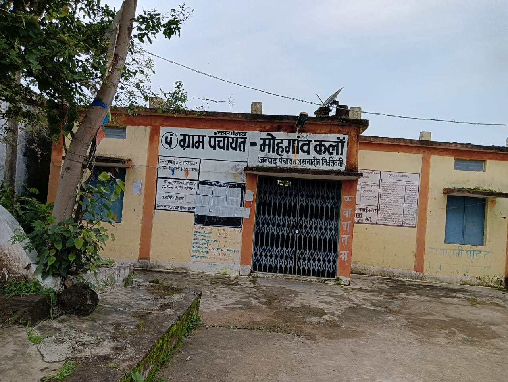

पंचायत भवन किसी भी गाँव का प्रशासनिक, सामाजिक और विकासात्मक केंद्र होता है। यह न केवल एक भवन है, बल्कि गाँव की सोच, एकता और योजनाओं का जीवंत प्रतीक भी है।
मोहगांव कलॉ जैसे गाँव में पंचायत भवन एक ऐसा स्थान है जहाँ से ग्रामीण विकास की नीतियाँ आकार लेती हैं, योजनाएँ बनाई जाती हैं और जन कल्याण से जुड़ी पहलों को धरातल पर उतारा जाता है। यह भवन ग्रामवासियों और शासन के बीच एक मजबूत सेतु का कार्य करता है।
पंचायत भवन वह जगह है जहाँ गाँव की सामूहिक समस्याओं पर चर्चा होती है, समाधान ढूंढे जाते हैं और निर्णय लिए जाते हैं। यह ग्राम स्वराज की अवधारणा को साकार करता है, जिसमें जनता की भागीदारी और निर्णय-निर्माण की स्वतंत्रता होती है।
मोहगांव कलॉ का पंचायत भवन भी इसी उद्देश्य की पूर्ति करता है। यहाँ की मिट्टी में आत्मीयता है, और पंचायत भवन इस आत्मीयता का एक संगठित रूप है। चाहे सरकारी योजनाओं की जानकारी देनी हो, राशन कार्ड से जुड़ी कोई प्रक्रिया हो, मनरेगा जैसी योजनाओं की मजदूरी से संबंधित जानकारी हो या ग्राम सभा की बैठक – इन सभी कार्यों का केंद्र यही भवन है।
यह भवन न केवल सरपंच, सचिव या ग्राम पंचायत सदस्यों के बैठने का स्थान है, बल्कि गाँव के हर उस नागरिक के लिए खुला स्थान है जो अपने गाँव की बेहतरी के लिए कुछ कहना, सुनना या समझना चाहता है।
मध्यप्रदेश में पंचायत राज व्यवस्था को 73वें संविधान संशोधन अधिनियम (1992) के तहत लागू किया गया। इस कानून के माध्यम से गाँवों को स्वशासन की शक्ति दी गई और हर ग्राम पंचायत के लिए एक कार्यालय की आवश्यकता महसूस की गई।
मोहगांव कलॉ की ग्राम पंचायत ने भी इसी दिशा में कदम बढ़ाया। प्रारंभ में पंचायत के कार्य गाँव के किसी प्राथमिक स्कूल या निजी मकान में चलाए जाते थे। बैठकों के लिए खुले में या किसी सामुदायिक भवन का उपयोग किया जाता था।
ग्राम वासियों ने कई वर्षों तक सरकार से आग्रह किया कि गाँव में एक स्थायी पंचायत भवन होना चाहिए। यह भवन न केवल ग्राम पंचायत की गरिमा बढ़ाता है, बल्कि ग्रामीणों के लिए सुविधा का भी प्रतीक होता है। अंततः राज्य सरकार ने इस प्रस्ताव को स्वीकार किया और पंचायत भवन के निर्माण के लिए राशि स्वीकृत की गई।
पंचायत भवन का निर्माण कार्य पंचायत निधि, मनरेगा, और राज्य सरकार की अन्य योजनाओं के सहयोग से प्रारंभ हुआ। भवन का नक्शा गाँव की ज़रूरतों को ध्यान में रखकर तैयार किया गया – जिसमें एक सभा कक्ष, सचिव का कार्यालय, रिकार्ड कक्ष और बैठने की खुली व्यवस्था शामिल है।
वर्तमान में भवन निर्माण कार्य तेजी से चल रहा है। दीवारें खड़ी हो चुकी हैं, छत ढल चुकी है, और अब प्लास्टर, टाइल्स, बिजली, पानी और फर्नीचर की व्यवस्था की जा रही है। कुछ महीनों के अंदर यह पंचायत भवन पूरी तरह से तैयार हो जाएगा और अपनी सेवा देना शुरू कर देगा।
इस भवन के निर्माण में गाँव के लोगों का भी भावनात्मक जुड़ाव है। कई स्थानीय लोगों ने स्वेच्छा से श्रमदान किया, तो कुछ ने निर्माण सामग्री में सहयोग दिया। सरपंच और सचिव की पारदर्शिता ने लोगों का विश्वास और भी मजबूत किया।